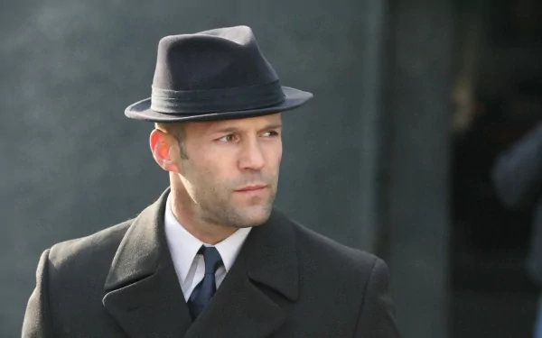
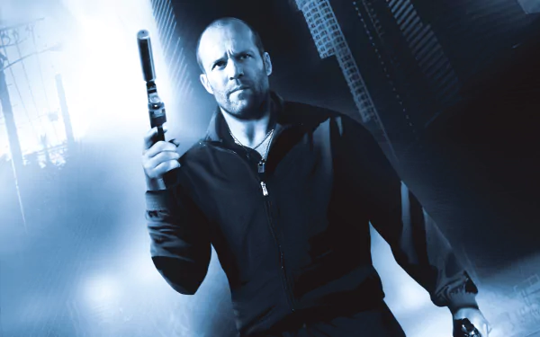
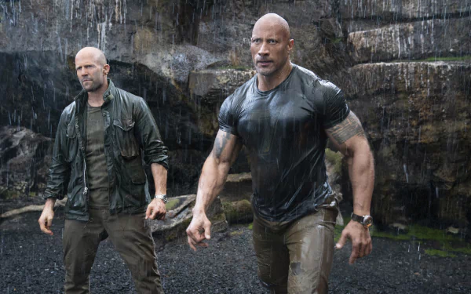
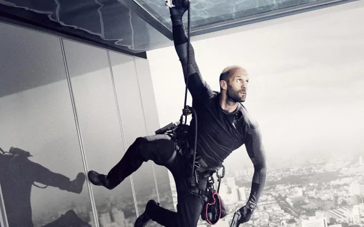

Jason Statham was born on July 26, 1967, in Shirebrook, Derbyshire, England. During his youth, Statham developed a passion for martial arts, kickboxing, and karate, which he practiced recreationally
while working at local market stalls. He also excelled in diving, becoming a member of Britain's National Swimming Squad for 12 years and representing England at the 1990 Commonwealth Games
in the 10-meter, 3-meter, and 1-meter events.
Statham's athletic physique and distinctive look caught the attention of modeling agencies, leading him to work for brands such as
Tommy Hilfiger, Griffin, and Levi's. In 1997, he became a model for the clothing brand French Connection.
His experience as a street seller and his rugged persona led director Guy Ritchie to cast him in the crime films "Lock, Stock and Two Smoking Barrels" (1998) and "Snatch" (2000),
which launched his acting career.
Statham is known for performing his own stunts and has become one of Hollywood's leading action stars.
He has appeared in films such as "The Transporter" series, "Crank," "The Expendables" series, and the "Fast & Furious" franchise.
His dedication to fitness and martial arts continues to be a significant part of his life. He has cited actors like Sylvester Stallone, Bruce Lee, Paul Newman, Steve McQueen, and Clint Eastwood as inspirations.
Statham's journey from a sports enthusiast and street vendor to an internationally recognized action star showcases his dedication, versatility, and passion for his craft.
|  |  |
|  |  |
Like Jason Statham's official Facebook page!